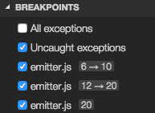

Node.js Debugging in VS Code
The Visual Studio Code editor has built-in debugging support for the Node.js runtime and can debug JavaScript, TypeScript, and any other language that gets transpiled to JavaScript.
Are you new to VS Code? Learn more and download a faster Node.js editor here.
This document explains the details of Node.js debugging. The general debugging feature are described in Debugging.
Supported Node-like Runtimes
Since the VS Code Node.js debugger communicates to the Node.js runtimes through wire protocols, the set of supported runtimes is determined by all runtimes supporting the wire protocols.
Today two wire protocols exist: - legacy: the
original
V8 Debugger Protocol
which is currently supported by all runtimes but will most
likely be dropped in Node.js v8.x. -
inspector: the new
V8 Inspector Protocol
is exposed via the --inspect flag in Node.js
versions >= 6.3. It addresses most of the limitations and
scalability issues of the legacy protocol.
Currently these protocols are supported by specific version ranges of the following runtimes:
| Runtime | 'Legacy' Protocol | 'Inspector' Protocol |
|---|---|---|
| io.js | all | no |
| node.js | < 8.x | >= 6.3 (Windows: >= 6.9) |
| Electron | < 7.4 | >= 7.4 |
| Chakra | all | not yet |
Although it appears to be possible that the VS Code Node.js
debugger picks the best protocol always automatically, we've
decided for a 'pessimistic approach' with an explicit launch
configuration attribute protocol and the
following values:
-
auto: tries to automatically detect the protocol used by the targeted runtime. For configurations of request typelaunchand if noruntimeExecutableis specified, we try to determine the version by running node from the PATH with an--versionargument. If the version is >= 8.0 the new 'inspector' protocol is used. For configurations of request type 'attach' we try to connect with the new protocol and if this works, we use the 'inspector' protocol. We only switch to the new 'inspector' protocol for versions >= 6.9 because of severe problems in earlier versions. -
inspector: forces the node debugger to use the 'inspector' protocol based implementation. This is supported by node versions >= 6.3, but not (yet) by Electron. -
legacy: forces the node debugger to use the 'legacy' protocol based implementation. This is supported by node versions < v8.0 and Electron versions < 7.4.
Starting with VS Code 1.11 the default value for the
protocol attribute is auto.
If your runtime supports both protocols, here are a few
additional reasons for using the
inspector protocol over legacy:
- It can be more stable when debugging very large JavaScript objects. The legacy protocol can become painfully slow when sending large values between the client and server.
-
If you are using an ES6 Proxy in your app, you can prevent a
Node v7+ runtime from crashing when being debugged via the
inspectorprotocol. This issue is tracked in Microsoft/vscode#12749. -
Debugging via the
inspectorprotocol can handle some trickier source map setups. If you have trouble setting breakpoints in source mapped files, try usinginspector.
We try to keep feature parity between both protocol
implementations but this becomes more and more difficult
because the technology underlying legacy is
deprecated whereas the new inspector evolves
quickly. For this reason, we specify the supported protocols
if a features is not supported by both legacy and
inspector.
Launch configuration attributes
The following attributes are supported in launch
configurations of type launch and
attach:
-
protocol- debug protocol to use. See section 'Supported Node-like Runtimes' above. -
port- debug port to use. See sections 'Attaching to Node.js' and 'Remote Debugging Node.js'. -
address- TCP/IP address of the debug port. See sections 'Attaching to Node.js' and 'Remote Debugging Node.js'. -
restart- restart session on termination. See section 'Restarting debug sessions automatically'. -
timeout- when restarting a session, give up after this number of milliseconds. See section 'Attaching to Node.js'. -
stopOnEntry- break immediately when the program launches. -
localRoot- VS Code's root directory. See sections 'Remote Debugging Node.js' below. -
remoteRoot- Node's root directory. See sections 'Remote Debugging Node.js' below. -
sourceMaps- enable source maps by setting this totrue. See section 'Source Maps'. -
outFiles- array of glob patterns to look for in JavaScript files. See section 'Source Maps'. -
smartStep- try to automatically step over code that doesn't map to source files. See section 'Smart Stepping'. -
skipFiles- automatically skip files covered by these glob patterns. See section 'Skipping Uninteresting Code'. -
trace- enable diagnostic output. Set to"all"for verbose output.
These attributes are only available for launch configurations
of request type launch:
-
program- an absolute path to the Node.js program to debug. -
args- arguments passed to the program to debug. This attribute is of type array and expects individual arguments as array elements. -
cwd- launch the program to debug in this directory. -
runtimeExecutable- absolute path to the runtime executable to be used. Default isnode. See section 'Launch configuration support for 'npm' and other tools'. -
runtimeArgs- optional arguments passed to the runtime executable. -
env- optional environment variables. This attribute expects environment variables as a list of string typed key/value pairs. -
envFile- optional path to a file containing environment variable definitions. -
console- kind of console to launch the program, e.g.internalConsole,integratedTerminal,externalTerminal. See section 'Node Console' below.
This attribute is only available for launch configurations of
request type attach:
-
processId- the debugger tries to attach to this process after having sent a USR1 signal. With this setting, the debugger can attach to an already running process that was not started in debug mode. When using theprocessIdattribute the debug port is determined automatically based on the node.js version (and the used protocol) and cannot be configured explicitely. So don't specify aportattribute.
Launch configuration snippets for common scenarios
You can use IntelliSense to add launch configuration snippets for commonly used Node.js debugging scenarios to the launch.json.

Here is the list of all snippets:
- Launch Program: Launch a node.js program in debug mode. The snippet asks you to enter the name of the program file.
- Launch via NPM: Launch a node program through an npm 'debug' script. If you have defined an npm debug script in your package.json, you can use this directly from your launch configuration. Make sure that the debug port used in the npm script, corresponds to the port specified in the snippet.
- Attach: Attach to the debug port of a locally running Node.js program. Make sure that the Node.js program to debug has been started in debug mode and the debug port used is the same as the one specified in the snippet.
-
Attach to Remote Program: Attach to the
debug port of a Node.js program running on the host
specified by the
addressattribute. Make sure that the Node.js program to debug has been started in debug mode and the debug port used is the same as the one specified in the snippet. To help VS Code mapping source files between your workspace and the filesystem of the remote host, make sure to specify correct paths for thelocalRootandremoteRootattributes. - Attach by Process ID: Open the process picker to select a node or gulp process for debugging. With this launch configuration you can even attach to a node or gulp process that was not started in debug mode.
- Nodemon Setup: Use nodemon to relaunch a debug session automatically whenever the JavaScript source has changed. Make sure that you have nodemon installed globally. Please note that terminating the debug session only terminates the program to debug, not nodemon itself. To terminate nodemon, press Control-C in the integrated terminal.
-
Mocha Tests: Debug mocha tests in a
testfolder of your project. Make sure that your project has 'mocha' installed in its node_modules folder. -
Yeoman generator: Debug a yeoman generator.
The snippet asks you to specify the name of the generator.
Make sure that your project has 'yo' installed in its
node_modules folder and that your generated project has been
installed for debugging by running
npm linkin the project folder. - Gulp task: Debug a gulp task. The snippet asks you to specify the name of the gulp task. Make sure that your project has 'gulp' installed in its node_modules folder.
-
Electron Main: Debug the main node.js
process of an Electron application. The snippet assumes that
the Electron executable has been installed inside the
node_modules/.bindirectory of the workspace.
Node console
By default, Node.js debug sessions launch the target in the
internal VS Code Debug Console. Since the Debug Console does
not support programs that need to read input from the console,
you can enable either an external terminal or use the VS Code
Integrated Terminal by setting the
console attribute in your launch configuration to
externalTerminal or
integratedTerminal respectively. The default is
internalConsole.
If an external terminal is used, you can configure which
terminal program to use via the
terminal.external.windowsExec,
terminal.external.osxExec, and
terminal.external.linuxExec settings.
Launch configuration support for 'npm' and other tools
Instead of launching the Node.js program directly with node, you can use 'npm' scripts or other task runner tools directly from a launch configuration:
-
Any program available on the PATH (for example 'npm',
'mocha', 'gulp', etc.) can be used for the
runtimeExecutableattribute and arguments can be passed viaruntimeArgs. -
You do not have to set the
programattribute if your npm script or other tool implicitly specifies the program to launch. -
If you specify a debug port via the
portattribute, VS Code will not automatically add the--inspect-brk=nnnnattribute because the debug port is typically specified by the npm script or other tool as well.
Let's look at an 'npm' example. If your
package.json has a 'debug' script, for example:
"scripts": {
"debug": "node --nolazy --inspect-brk=9229 myProgram.js"
},
the corresponding launch configuration would look like this:
{
"name": "Launch via NPM",
"type": "node",
"request": "launch",
"cwd": "${workspaceRoot}",
"runtimeExecutable": "npm",
"runtimeArgs": [
"run-script", "debug"
],
"port": 9229
}
Load environment variables from external file (node)
The VS Code Node debugger supports loading environment
variables from a file and passing them to the Node.js runtime.
To use this feature, add an attribute envFile to
your launch configuration and specify the absolute path to the
file containing the environment variables:
//...
"envFile": "${workspaceRoot}/.env",
"env": { "USER": "john doe" }
//...
````
Any environment variable specified in the `env` dictionary will override variables loaded from the file.
Here is an example of an `.env` file:
USER=doe PASSWORD=abc123
a comment
an empty value:
empty=
new lines expanded in quoted strings:
lines="foo\nbar"
## Attaching to Node.js
If you want to attach the VS Code debugger to a Node.js program, launch Node.js as follows:
node --inspect program.js or node --inspect-brk program.js
With the `--inspect-brk` option, Node.js stops on the first line of the program.
The corresponding launch configuration looks like this:
```json
{
"name": "Attach to Process",
"type": "node",
"request": "attach",
"port": 9229
}
If you want to attach to a Node.js process that hasn't been started in debug mode, you can do this by specifying the process ID of the Node.js process as a string:
{
"name": "Attach to Process",
"type": "node",
"request": "attach",
"processId": "53426",
"port": 9229
}
Since it is a bit laborious to repeatedly find the process ID
and enter it in the launch configuration, node debug supports
a command variable PickProcess that binds to a
process picker that lets you conveniently pick the process
from a list of node or gulp processes:

By using the PickProcess variable the launch
configuration looks like this:
{
"name": "Attach to Process",
"type": "node",
"request": "attach",
"processId": "${command:PickProcess}",
"port": 9229
}
Remote debugging
The Node.js debugger supports remote debugging for versions of
Node.js >= 4.x. Specify a remote host via the
address attribute.
By default, VS Code will stream the debugged source from the
remote Node.js folder to the local VS Code and show it in a
read-only editor. You can step through this code, but cannot
modify it. If you want VS Code to open the editable source
from your workspace instead, you can setup a mapping between
the remote and local locations. A localRoot and a
remoteRoot attribute can be used to map paths
between a local VS Code project and a (remote) Node.js folder.
This works even locally on the same system or across different
operating systems. Whenever a code path needs to be converted
from the remote Node.js folder to a local VS Code path, the
remoteRoot path is stripped off the path and
replaced by localRoot. For the reverse
conversion, the localRoot path is replaced by the
remoteRoot.
Access Loaded Scripts
If you need to set a breakpoint in a script that is not part of your workspace and therefore cannot be easily located and opened through normal VS Code file browsing, you can access the loaded scripts via the LOADED SCRIPTS view in the debug viewlet:

Alternatively you can use the
Debug: Open Loaded Script action
(kb(extension.node-debug.pickLoadedScript)) which
opens a Quick Pick, where you can filter and select the script
to open.

Scripts are loaded into a read-only editor where you can set breakpoints. These breakpoints are remembered across debug sessions but you only have access to the script content while a debug session is running.
Restarting debug sessions automatically when source is edited
The restart attribute of a launch configuration
controls whether the Node.js debugger automatically restarts
after the debug session has ended. This feature is useful if
you use
nodemon to
restart Node.js on file changes. Setting the launch
configuration attribute restart to
true makes the node debugger automatically try to
re-attach to Node.js after Node.js has terminated.
If you have started your program server.js via
nodemon on the command line like this:
nodemon --inspect server.js
you can attach the VS Code debugger to it with the following launch configuration:
{
"name": "Attach to node",
"type": "node",
"request": "attach",
"restart": true,
"port": 9229
}
Alternatively you can start your program
server.js via nodemon directly
with a launch config and attach the VS Code debugger:
{
"name": "Launch server.js via nodemon",
"type": "node",
"request": "launch",
"runtimeExecutable": "nodemon",
"program": "${workspaceRoot}/server.js",
"restart": true,
"console": "integratedTerminal",
"internalConsoleOptions": "neverOpen"
}
Tip: Pressing the Stop button stops the debug session and disconnects from Node.js, but nodemon (and Node.js) will continue to run. To stop nodemon, you will have to kill it from the command line (which is easily possible if you use the
integratedTerminalas shown above).Tip: In case of syntax errors, nodemon will not be able to start Node.js successfully until the error has been fixed. In this case, VS Code will continue trying to attach to Node.js but eventually give up (after 10 seconds). To avoid this, you can increase the timeout by adding a
timeoutattribute with a larger value (in milliseconds).
Restart frame (node)
The Node debugger supports restarting execution at a stack frame. This can be useful in situations where you have found a problem in your source code and you want to rerun a small portion of the code with modified input values. Stopping and then restarting the full debug session can be very time-consuming. The Restart Frame action allows you to re-enter the current function after you have changed variables with the Set Value action:

Note that Restart Frame won't unroll any state changes, so it may not always work as expected.
Make sure to use a Node.js version >= 5.11 since earlier versions do not work in all situations.
Function breakpoints
The Node.js debugger supports function breakpoints but their usefulness is limited because:
- Function breakpoints only work for global, non-native functions.
- Function breakpoints can only be created if the function has been defined (and has been seen by the debugger).
Breakpoint hit counts
The 'hit count condition' controls how many times a breakpoint
needs to be hit before it will 'break' execution. The hit
count syntax supported by the Node.js debugger is either an
integer or one of the operators <,
<=, ==, >,
>=, % followed by an integer.
Some examples:
>10break always after 10 hits<3break on the first two hits only10same as>=10%2break on every other hit
Breakpoint validation
For performance reasons, Node.js parses the functions inside JavaScript files lazily on first access. As a consequence, breakpoints don't work in source code areas that haven't been seen (parsed) by Node.js.
Since this behavior is not ideal for debugging, VS Code passes
the --nolazy option to Node.js automatically.
This prevents the delayed parsing and ensures that breakpoints
can be validated before running the code (so they no longer
"jump").
Since the --nolazy option might increase the
start-up time of the debug target significantly, you can
easily opt out by passing a --lazy as a
runtimeArgs attribute.
When doing so you will find that some of your breakpoints don't "stick" to the line requested but instead "jump" for the next possible line in already-parsed code. To avoid confusion, VS Code always shows breakpoints at the location where Node.js thinks the breakpoint is. In the BREAKPOINTS section, these breakpoints are shown with an arrow between requested and actual line number:

This breakpoint validation occurs when a session starts and the breakpoints are registered with Node.js, or when a session is already running and a new breakpoint is set. In this case, the breakpoint may "jump" to a different location. After Node.js has parsed all the code (e.g. by running through it), breakpoints can be easily re-applied to the requested locations with the Reapply button in the BREAKPOINTS section header. This should make the breakpoints "jump back" to the requested location.

Skipping uninteresting code (node, chrome)
VS Code Node.js debugging has a feature to avoid code that you
don't want to step through (AKA 'Just My Code'). This feature
can be enabled with the skipFiles attribute in
your launch configuration. skipFiles is an array
of glob patterns for script paths to skip.
For example using:
"skipFiles": [
"${workspaceRoot}/node_modules/**/*.js",
"${workspaceRoot}/lib/**/*.js"
]
all code in the node_modules and
lib folders in your project will be skipped.
Built-in core modules of Node.js can be
referred to by the 'magic name'
<node_internals> in a glob pattern. The
following example skips all internal modules:
"skipFiles": [
"<node_internals>/**/*.js"
]
The exact 'skipping' rules are as follows:
- If you step into a skipped file, you won't stop there - you will stop on the next executed line that is not in a skipped file.
- If you have set the option to break on thrown exceptions, then you won't break on exceptions thrown from skipped files.
- If you set a breakpoint in a skipped file, you will stop at that breakpoint, and you will be able to step through it until you step out of it, at which point normal skipping behavior will resume.
Skipped source is shown in a 'dimmed' style in the CALL STACK view:
Hovering over the dimmed entries explains why the stack frame is dimmed.
A context menu item on the call stack,
Toggle skipping this file enables you to
easily skip a file at runtime without adding it to your launch
config. This option only persists for the current debugging
session. You can also use it to stop skipping a file that is
skipped by the skipFiles option in your launch
config.
Note: The
legacyprotocol debugger supports negative glob patterns, but they must follow a positive pattern: positive patterns add to the set of skipped files, while negative patterns subtract from that set.
In the following (legacy protocol-only) example
all but a 'math' module is skipped:
"skipFiles": [
"${workspaceRoot}/node_modules/**/*.js",
"!${workspaceRoot}/node_modules/math/**/*.js"
]
Note: The
legacyprotocol debugger has to emulate theskipFilesfeature because the V8 Debugger Protocol does not support it natively. This might result in slow stepping performance.
Source maps
The Node.js debugger of VS Code supports JavaScript Source Maps which help debugging of transpiled languages, e.g. TypeScript or minified/uglified JavaScript. With source maps, it is possible to single step through or set breakpoints in the original source. If no source map exists for the original source or if the source map is broken and cannot successfully map between the source and the generated JavaScript, then breakpoints show up as unverified (gray hollow circles).
Source maps can be generated with two kinds of inlining:
- Inlined source maps: the generated JavaScript file contains the source map as a data URI at the end (instead of referencing the source map through a file URI).
- Inlined source: the source map contains the original source (instead of referencing the source through a path).
VS Code supports both the inlined source maps and the inlined source.
The source map feature is controlled by the
sourceMaps attribute which defaults to
true starting with VS Code 1.9.0. This means that
node debugging always tries to use source maps (if it can find
any) and as a consequence you can even specify a source file
(e.g. app.ts) with the program attribute.
If you need to disable source maps for some reason, you can
set the sourceMaps attribute to
false.
If the generated (transpiled) JavaScript files do not live
next to their source but in a separate directory, you must
help the VS Code debugger locating them by setting the
outFiles attribute. This attribute takes multiple
glob patterns for including and excluding files from the set
of generated JavaScript files. Whenever you set a breakpoint
in the original source, VS Code tries to find the generated
JavaScript code in the files specified by
outFiles.
Since source maps are not automatically created, you must configure the transpiler you are using to create them. For TypeScript this can be done in the following way:
tsc --sourceMap --outDir bin app.ts
This is the corresponding launch configuration for a TypeScript program:
{
"version": "0.2.0",
"configurations": [
{
"name": "Launch TypeScript",
"type": "node",
"request": "launch",
"program": "app.ts",
"outFiles": [ "${workspaceRoot}/bin/**/*.js" ]
}
]
}
Smart stepping
With the smartStep attribute set to
true in a launch configuration, VS Code will
automatically skip 'uninteresting code' when stepping through
code in the debugger. 'Uninteresting code' is code that is
generated by a transpiling process but is not covered by a
source map so it does not map back to the original source.
This code gets in your way when stepping through source code
in the debugger because it makes the debugger switch between
the original source code and generated code that you are not
really interested in. smartStep will
automatically step through code not covered by a source map
until it reaches a location that is covered by a source map
again.
This is especially useful for cases like async/await downcompilation in TypeScript, where the compiler injects helper code that is not covered by a source map.
JavaScript source map tips
A common issue when debugging with source maps is that you'll
set a breakpoint, and it will turn gray. If you hover the
cursor over it, you'll see the message,
"Breakpoint ignored because generated code not found
(source map problem?)". What now? There are a range of issues that can lead to
this. First, a quick explanation of how the Node debug adapter
handles source maps.
When you set a breakpoint in app.ts, the debug
adapter has to figure out the path to app.js, the
transpiled version of your TypeScript file, which is what is
actually running in Node. But, there is not a straightforward
way to figure this out starting from the
.ts file. Instead, the debug adapter uses the
outFiles attribute in the
launch.json to find all the transpiled
.js files, and parses them for a source map,
which contains the locations of its associated
.ts files.
When you build your app.ts file in TypeScript
with source maps enabled, it either produces an
app.js.map file, or a source map inlined as a
base64-encoded string in a comment at the bottom of the
app.js file. To find the .ts files
associated with this map, the debug adapter looks at two
properties in the source map, sources, and
sourceRoot. sourceRoot is optional -
if present, it is prepended to each path in
sources, which is an array of paths. The result
is an array of absolute or relative paths to
.ts files. Relative paths are resolved relative
to the source map.
Finally, the debug adapter searches for the full path of
app.ts in this resulting list of
.ts files. If there's a match, it has found the
source map file to use when mapping app.ts to
app.js. If there is no match, then it can't bind
the breakpoint, and it will turn gray.
Here are some things to try when your breakpoints turn gray:
-
Do you have
"sourceMaps": falsein yourlaunch.json? -
Did you build with source maps enabled? Are there
.js.mapfiles, or inlined source maps in your.jsfiles? -
Did you set the
outFilesproperty in yourlaunch.json? It should be a glob pattern for an absolute path that matches your.jsfiles. - Try the 'inspector' protocol implementation. It can handle some more of the more complex source map cases.
-
Are the
sourceRootandsourcesproperties in your source map correct? Can they be combined to get the correct path to the.tsfile? -
Are you using Webpack? By default, it outputs paths with a
webpack:///prefix, which the debug adapter can't resolve. You can change this in your Webpack configuration with thedevtoolModuleFilenameTemplateoption, or try using the 'inspector' protocol, which provides some extra options for resolving these paths. -
Have you opened the folder in VS Code with the incorrect
case? It's possible to open folder
foo/from the command line likecode FOOin which case source maps may not be resolved correctly. - Try searching for help with your particular setup on Stack Overflow or by filing an issue on GitHub.
-
Try adding a
debuggerstatement. If it breaks into the.tsfile there, but breakpoints at that spot don't bind, that is useful information to include with a GitHub issue.
Next Steps
In case you didn't already read the Node.js section, take a look at:
- Node.js - End to end Node scenario with a sample application
To see a tutorial on the basics of Node.js debugging, check out:
- Intro Video - Debugging - Introductory video showcasing the basics of debugging.
To learn about VS Code's task running support, go to:
- Tasks - Running tasks with Gulp, Grunt and Jake. Showing Errors and Warnings
To write your own debugger extension, visit:
- Debuggers - Steps to create a VS Code debug extension starting from a mock sample
Common Questions
Q: What Node.js version is required for Node.js debugging?
A: The latest LTS version of Node.js is recommended.
Q: Can I use nvm (Node Version Manager) with VS Code?
A: Yes. If you are managing Node.js versions
with nvm, make sure to restart VS Code after you
have set a Node.js version with
nvm use ... because VS Code will not pick up
changes to environment variables (for example
PATH) that occur after it was launched.